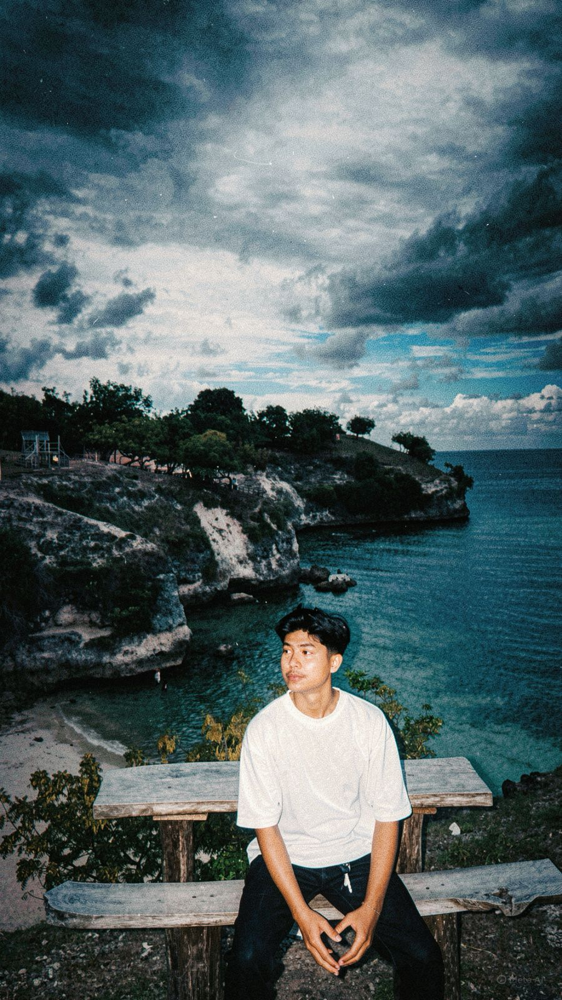

AHLUL ZIKRI
✨ UI/UX Designer & Frontend Developer ✨
Aceh, Indonesia | Bergabung 2026
Biodata Diri
- Nama Lengkap: Ahlul Zikri
- Tanggal Lahir: 10 oktober 2005
- No. Telepon: +62 85372735071
- Email: zikriahlul28@gmail.com
- Website: www.ahlulzikri.com
- Hobi: Desain Grafis, Nonton Film, badminton
Keahlian & Tools
Figma / UI Design90%
HTML5 / CSS3 / JS85%
React JS78%
Adobe XD & PS88%
Featured Projects
Streaming
spotytube
HTML · CSS · JS
Platform streaming musik dengan UI imersif.
Fintech
Pintar Tabungan
JS · LocalStorage · DOM
Aplikasi pencatat keuangan dengan saldo dinamis.
To-Do
tugas mitem/Pendaftaran Turnamen
HTML · CSS · JavaScript
Task manager sederhana untuk produktivitas harian.
 Finansial
Finansial
Tugas final / web berbasis ai
HTML · CSS · JS
Tentang Saya
Saya seorang desainer dan developer yang antusias dalam menciptakan pengalaman digital yang indah dan fungsional. Memiliki passion di bidang desain antarmuka serta pengembangan front-end. Saat ini bekerja sebagai freelancer dan juga membagikan ilmu melalui workshop design thinking.
Statistik
Proyek Selesai
34+
Klien Puas
28
Penghargaan
5
Kopi Setiap Hari
3+
Media Sosial
playlist favorit: Lofi beats & Jazz
Waktu Aktif
Online Setiap Hari
--:--
💬 "Selalu terbuka untuk kolaborasi keren"